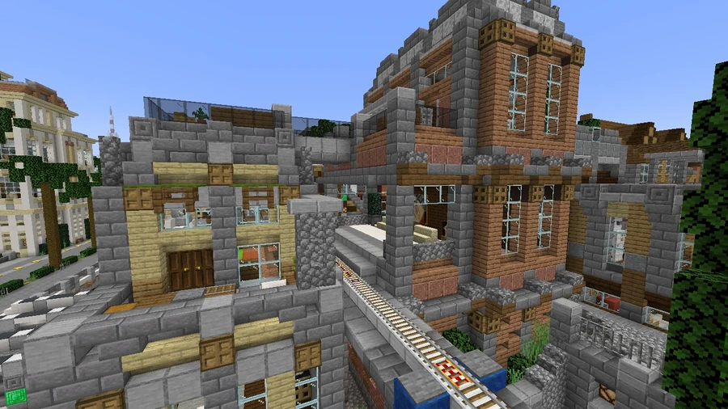

Breno Monorail
A local Yellow Line linking Breno’s hotels, casinos and nightlife venues to the Canal East interchange with the Red and Blue Lines.
Breno station
The monorail serves Breno, south of Broville. Its station, at −316, 78, 2239, is integrated into an urban building. It provides a connection for casinos, hotel complexes and the district's nightlife; Breno also appears along the regional railway route.



Interchange at Canal East
The yellow route connects the entertainment area to the wider network through Canal East, also spelled Canals East in map references. The metro Red and Blue Lines intersect there, allowing onward travel to other neighborhoods.
Nightlife destinations
The route ends above two venues presented as important Broville nightlife destinations: That place those who are something are talking about and Exclisior Night Club.
Because it serves this group of attractions, the line is described as recording its highest ridership peaks during the first part of the night, between 9 p.m. and 2 a.m.
See also
Sources and references
- v11.4.4 maps, signs, books and items World records
- Breno Monorail · Broville Wiki Community archive
Text adapted and expanded from Breno Monorail (contributors and history, revision 4952). Adapted text is available under CC BY-SA 3.0.